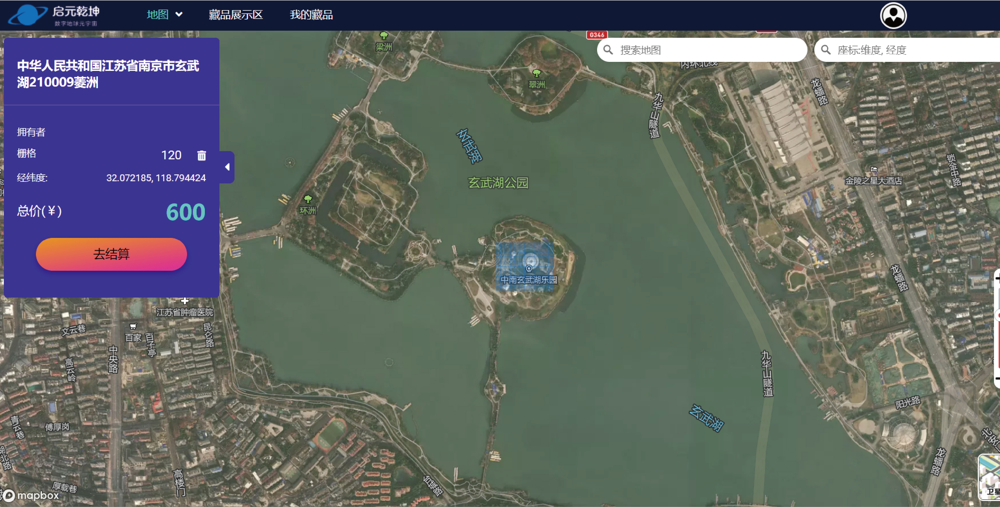

什么是数字藏品？
2021年，元宇宙概念爆火，技术发展打破了一直以来想象的边界，VR、AR、区块链等技术飞速发展，应用于虚拟与现实结合的各大延伸领域。小陆（化名）从2021年12月开始关注VR、AR等技术，对这个未知领域充满好奇的他顺势搜索了元宇宙的周边应用场景，其中一种就是nft（Non-Fungible Token，指非同质化通证）.
而 数字藏品 则是nft在中国市场上的一种特殊呈现形式,可以理解为中国特色、受监管的另类NFT。
NFT
NFT(Non fungible token，非同质化代币)是映射特定资产的非同质化通证，绝大部分是基于以太坊ERC协议上，即在以太坊上铸造与发行。通过区块链标记了用户对于特定资产的所有权，使得NFT成为该特定资产公认的可交易性实体。同时，NFT具有不可替代、不可分割、不可篡改等特征。NFT的核心价值在于“数字内容资产化”，是虚拟世界产权确权和交易流通机制。主要应用于版权保护、版权交易、内容发行、IP价值衍生变现等。

NBA Top Shot球星视频集锦NFT
2021 年 2 月，Dapper Labs 的 NBA Top Shot 将球星视频集锦以 NFT 的形式出售，最终成为买家手中的数字资产，创造了 2.26 亿美元的交易额，超过了整个 NFT 市场过去一年的交易额。

数字艺术品
数字艺术家Beeple作品《Everydays： The First 5000 Days》，成交价6930万美元（约4.5亿人民币）。
PFP
Moonbirds 是由美国著名互联网企业家 Kevin Rose 创建的 10000 个 NFT 集合，作为他的 Proof Collective 的一部分--一个由 NFT 收藏家和艺术家组成的私人会员制集体。

文物数字藏品
国内数藏品让馆藏文物焕发了新的生命力，自2021年以来有大量博物馆将馆藏文物制作成数藏品进行发售，其具有极高的收藏审美价值，引来了市场的好评。

阴阳师数字藏品馆
每一份大熊猫卡片数字收藏品，都对应着公益活动日历上独一无二的一天。阴阳师们的认购将直接助力到大熊猫公益活动的开展，所认购的藏品与支持公益的善举，也将永久收藏和记录在「阴阳师数字藏品馆」中。

音乐数字藏品
以数字藏品的形式生成音乐作品进行发售，也成为一种新的方式，该方式也能更好的避免侵权问题等。

数字地球藏品
启元乾坤元宇宙，国内第一个基于数字地球的元宇宙项目。
数字藏品应用场景广泛，个人资料图片(PFP)、 元宇宙、艺术收藏、游戏、体育、文物、音乐等等都可以上链，以数字藏品的形式发行。
国际市场中，个人资料图片占大多数，国内多以艺术收藏、文物藏品等为主。
图一 细分类目市场规模比较
数据来源：洞见研报


{kind=link}
{kind=link}
{kind=link}